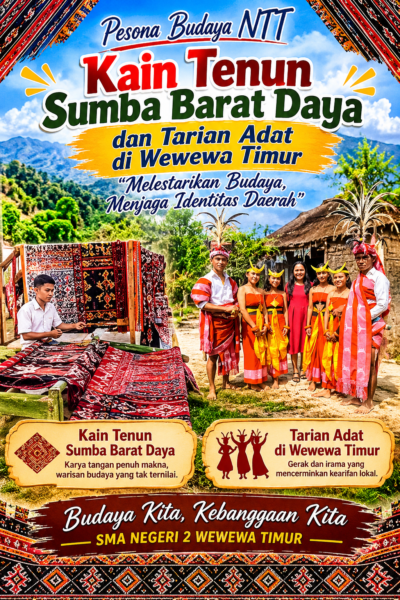

Pelestarian Budaya Lokal Melalui Tarian dan Tenun Kain Sumba Barat Daya
Pelestarian budaya lokal merupakan salah satu program unggulan SMA Negeri 2 Wewewa Timur yang berlokasi di Desa Mata Pyawu, Kecamatan Wewewa Timur, Kabupaten Sumba Barat Daya. Program ini lahir dari kesadaran bahwa budaya daerah adalah jati diri yang harus dijaga, terlebih di tengah arus modernisasi dan pengaruh budaya luar yang semakin kuat di kalangan generasi muda. Karena itu, sekolah berupaya menjadikan budaya Sumba Barat Daya bukan hanya sebagai warisan yang dikenang, tetapi sebagai bagian nyata dari kehidupan dan pembelajaran peserta didik sehari-hari.
Salah satu bentuk kegiatan dalam program ini adalah seni tari tradisional. Peserta didik dilatih membawakan tarian daerah dengan mengenakan busana adat lengkap, mulai dari kain tenun, ikat kepala, hiasan kepala berbentuk bulan sabit, hingga perhiasan khas Sumba. Melalui latihan yang berkelanjutan, siswa tidak hanya belajar gerakan, tetapi juga memahami makna, nilai, dan filosofi yang terkandung dalam setiap tarian. Hasil latihan tersebut ditampilkan pada berbagai kesempatan, seperti perayaan HUT Kemerdekaan Republik Indonesia, kegiatan seni dan kreativitas murid kelas XII, serta acara-acara sekolah lainnya. Penampilan ini menjadi wadah bagi siswa untuk mengekspresikan bakat, melatih keberanian tampil di depan umum, dan membangun kerja sama dalam kelompok.
Kegiatan lainnya adalah pembelajaran tenun kain Sumba Barat Daya. Dalam kegiatan ini, peserta didik belajar langsung dari para pengrajin tenun setempat untuk mengenal ragam motif, makna simbolik yang terkandung di dalamnya, serta proses pembuatan kain tenun yang membutuhkan ketelatenan dan keterampilan tinggi. Hasil karya para pengrajin juga dipamerkan di lingkungan sekolah, sehingga siswa dapat melihat, menghargai, dan mengapresiasi kekayaan kain tenun daerahnya secara langsung. Kerja sama dengan para pengrajin ini sekaligus mempererat hubungan antara sekolah dan masyarakat sekitar, serta memberi penghargaan bagi para penjaga tradisi tenun di daerah.
Melalui program ini, SMA Negeri 2 Wewewa Timur berharap dapat menumbuhkan rasa bangga dan cinta peserta didik terhadap identitas daerahnya, mengembangkan kreativitas dan kepercayaan diri, serta membentuk karakter yang berbudaya dan berakhlak mulia. Lebih jauh lagi, program ini diharapkan menjadi sarana pewarisan nilai-nilai budaya Sumba Barat Daya kepada generasi berikutnya, sehingga tarian dan tenun tradisional tetap hidup, dikenal, dan terus dilestarikan oleh anak-anak muda sebagai penerus budaya daerah.
